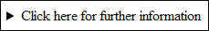
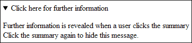
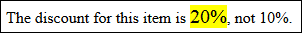

The Details, Aside, and Mark tags
The HTML 5 Details Tag
The details tag allows you to add extra information that can be viewed or hidden. For example, take a look at the image below:

When a user clicks the above message, the following information is revealed:

Clicking the summary will hide the above message.
The Details tag is used like this:
<DETAILS>
<SUMMARY>Click here for further information</ SUMMARY >
<P>
Further information is revealed when a user clicks the summary
<BR>
Click the summary again to hide this message.
</ DETAILS >
In between two Details tags, you add a pair of Summary tags. The summary is
the part that is shown to the user. Details can then be added below the Summary
tags.
Sadly, only the Chrome browser supports the Details tag at the time of writing.
Browsers that don't support the Details tag will simply display the whole of
the information you added between the two tags, including the summary.
The HTML 5 ASIDE Tag
The Aside tag is used for material related to the text of your article, but doesn't quite fit in. Think of it as additional material you would like to relay to your readers. You can format an ASIDE tag with CSS, so that it stands out from the main text. Here's an example:
<ARTICLE>
<P>
Main article text here
</P>
<ASIDE>We've missed out other ARTICLE tags</ASIDE>
</ ARTICLE>
The code above shows that we have a main article. We've some HTML5 tags out,
however, and want to convey that to our readers. Hence the pair of ASIDE tags.
The HTML 5 MARK Tag
The Mark tag is used to mark out text that you want to highlight. The marked text is then formatted with a yellow background. The Mark tag is used like this:
The discount for this item is <MARK>20%</MARK>, not 10%.
When the above line is formatted, it might look like this in a browser:

Note the yellow background behind the text we have marked out.
In the next section, we'll move on and take a look at getting your site on the internet.